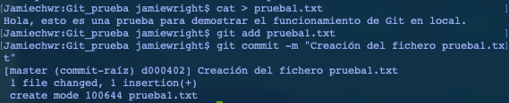
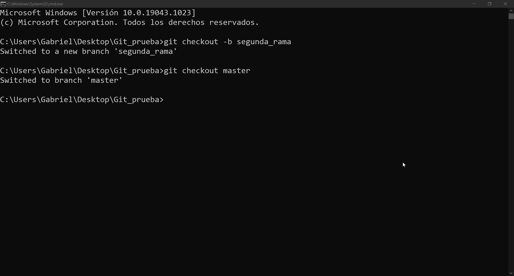
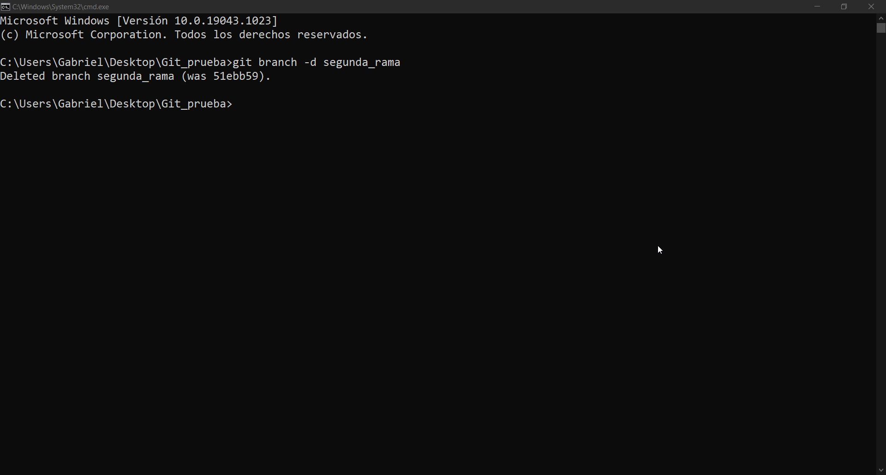
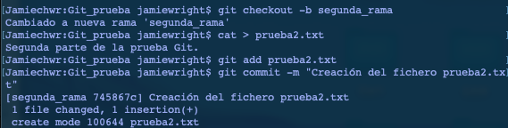
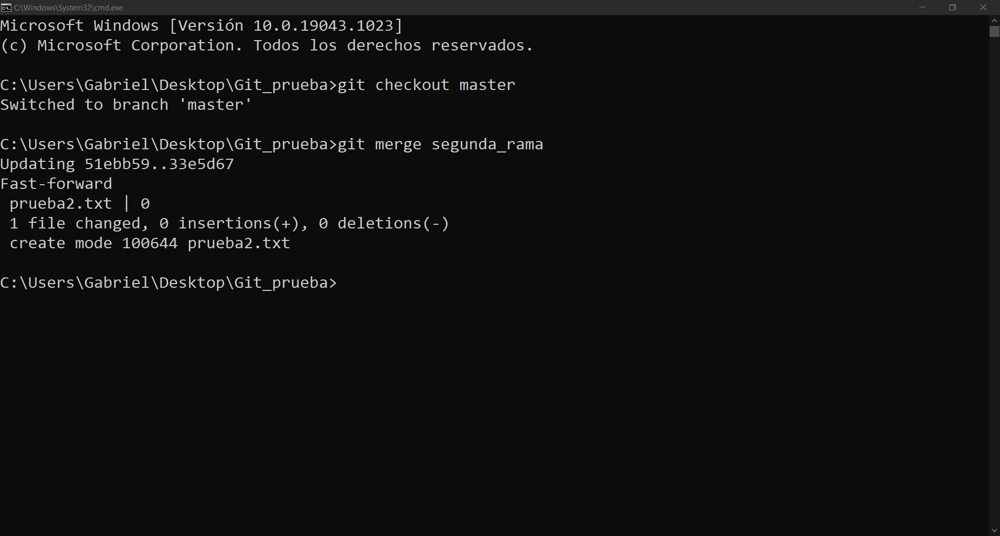
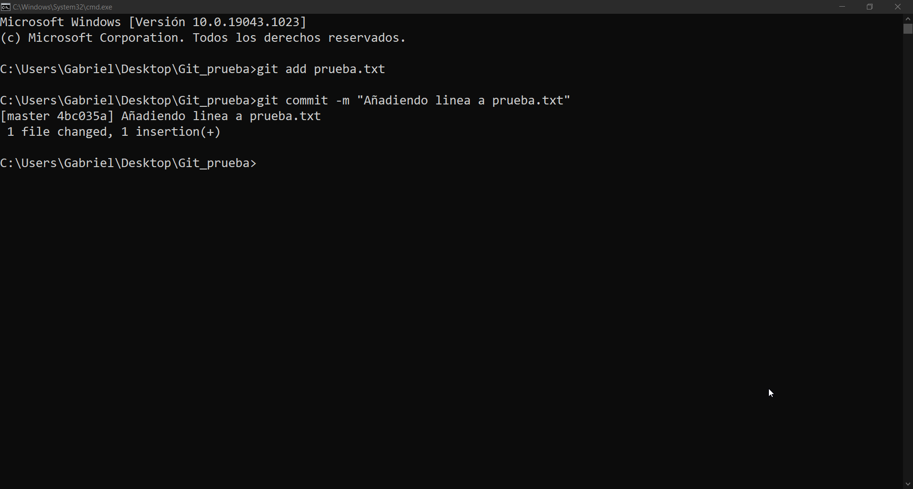
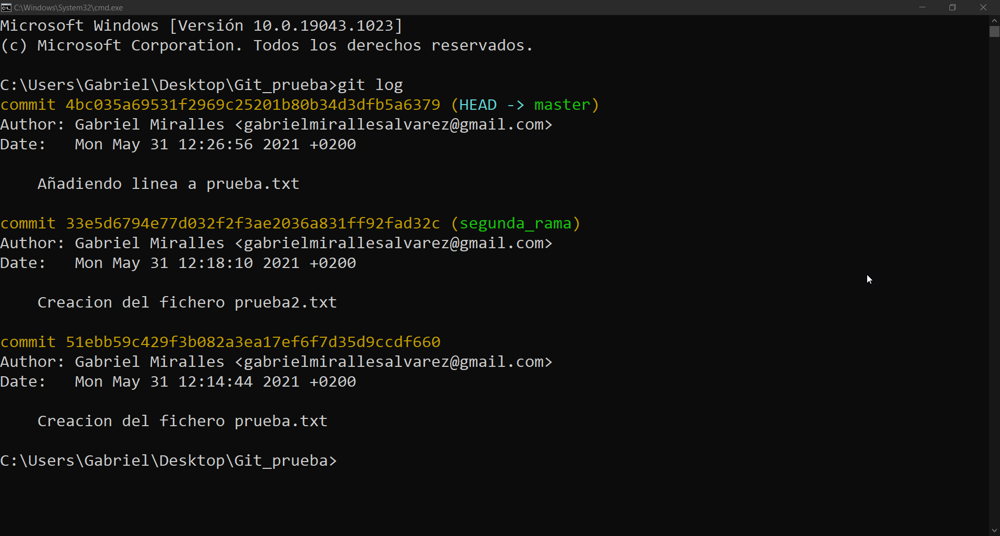
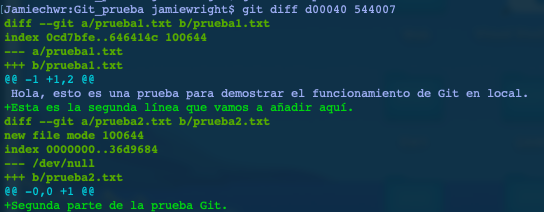

1 / 9

Usando el git init crea un nuevo repositorio en git
2 / 9

Usando el git add añadimos al repositorio de git ya creado el o los archivos especificados al área de preparación, commit confirma y guarda los cambios en el repositorio
3 / 9

Git checkout crea ramas y te ayuda a navegar entre ellas, usando git checkout -b crea una nueva rama y se cambia a ella
4 / 9

Git branch -d elimina la rama que se espeficique
5 / 9

Usando los comandos anteriormente modifica la rama y la confirma usando el commit
6 / 9

Usando el comando merge se utiliza para fusionar dos ramas distintas
7 / 9

Este es un ejemplo de un cambio en un repositorio
8 / 9

Usando git log podemos saber quien y cuando ha hecho commit en la rama en la que nos ubicamos
9 / 9

Se usa para hacer una lista de conflictos respecto a otro archivo
❮
❯